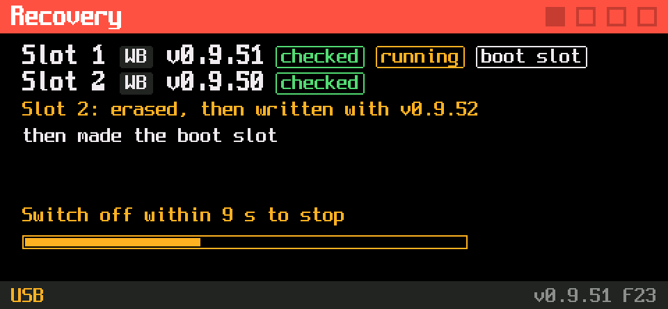

-
1ok
Browser
Checking the browser...
-
3ok
Your unit
What the unit reports shows here once it is connected.
BatteryRecovery
-
4ok
Choose the image
A waffle-boot image,
waffle-boot.ldr. It is checked here before anything is sent. -
5ok
Write it
The image goes into the slot the unit is not running from. The running slot is not touched, so the unit still starts if this is interrupted.
15 The unit is counting down. Switch it off now to stop: nothing has been written yet.
What the unit shows while it counts down. -
6ok
Restart
The unit starts the new image. If it does not come up, switch it off and on: it starts the slot it ran before.
Every command of tools/wbrecover.py. A is the
slot the unit runs from, B the other. Each asks before it sends, and the unit counts down 15 s
before it writes.
Image
Write
Write B
The image goes into the slot the unit is not running from.
Write A, the running slot
B is selected first if it is good. With B bad the write is in place, with no fallback.
Try an image with another front
Written to B for one trial start. B's old image is lost.
Slots
Try B once
The next start runs B once, then A again.
Switch to B for good
The unit starts B from now on.
Keep a tried slot
For a tried slot that came up: start it from now on.
Keep a tried slot, checked against the image
As Keep, after comparing the slot with the chosen image.
Put a tried slot's record back
A tried, unkept slot reads good again. Also cancels a try not yet started.
Unit
Restart
Restarts the unit without a key held.
-
2ok
Write the installer file from the developer menu
The installer checks the unit's hardware first. Only when every check passes does it offer to install waffle-boot, and every write is started and confirmed on the unit: you hold the key it names for 5 s. This page only shows what the installer reports. It sends no bootloader image and asks for no write; for a unit already on waffle-boot it can send the installer file itself (below).
- Have the installer file,
waffle-install.ldr, from a waffle-boot release. - Open the developer menu of the bootloader your unit has, and write the file there as the OS. It goes into the boot partition the OS is not in, so the OS stays where it is.
- Switch the unit off and on. It starts the installer, which begins its checks.
- Connect the unit to this computer with a USB cable.
- Have the installer file,
-
3ok
Connect to the installer
The browser asks which port to use: pick the OP-XY.
Simulator -
4ok
The checks
Each check and its result shows here as the installer runs it.
-
5ok
What will be written
The bootloader the installer carries, once it is connected.
VersionLengthCRC-32Front pinGoes intoVerified -
6ok
Install
The installer offers the install once every check has passed.
- Every check passed
- Trial written
- Trial start reached the boot menu
- Kept
If something goes wrong
- No port named OP-XY Recovery. The unit is not in the recovery menu, or the cable carries power only. Check the screen, then try another cable or port.
- Refused or Stopped. Nothing was written. The message says why.
- The connection dropped during a transfer. Nothing was written. Connect and write again.
- FAILED while writing the other slot. The unit still starts as before. Write again.
- Install: a check did not pass. Nothing was written. The Install step says what the unit starts now; save check.txt, which lists every check.
- Install: the trial failed. Nothing was kept: the unit starts the bootloader it had. Hold the key the unit names to try again, or leave it as it is.
- The unit does not start after a restart. Switch it off and on with no key held. If it still does not start, hold M4 again: recovery is in every image.
More: the recovery guides and the reference.